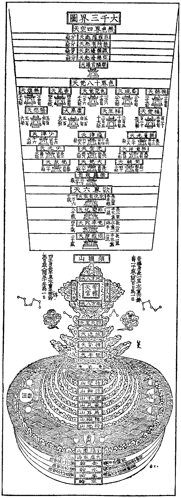

佛祖統紀卷第三十一
世界名體志第十五之一
上窮寶焰下徹風輪。此華嚴所明一世界種。竪高則且約二十重。周圍則略得十一數。復由此數隨方各十。則總之為百十一。如天帝珠網分布而住。斯但舉其一分云耳。若推而廣之。則十不可說微塵世界。遞相連接周遍建立。各各佛出現。各各滿眾生。是為華藏莊嚴世界海也。若夫娑婆大千須彌四天下南洲五竺。東華震旦。若名若體。有說有圖。雖自廣以至狹。實舉別而會總。既明三世須辨方界。此學者所宜知也。撰世界名體志。
華藏世界海圖 大千萬億須彌圖 四洲九山八海圖 三千大千世界圖 須彌忉利天宮圖 諸天通論
身量 壽量 衣量 身光 業因 報果 廣狹 凡聖 論無色身處 論天主 論四禪四地
東華震旦地理圖 漢隋西域諸國圖 西土五印諸國圖 八熱地獄圖 十六遊僧地獄圖 八寒地獄圖
華藏世界品云(經七)此華藏莊嚴世界有須彌山微塵數風輪所持。最在上者名殊勝威光藏。能持普光摩尼香水海。此海有大蓮華。名種種光明蘂香幢。華藏莊嚴世界住在其中。金剛輪山周匝圍遶○此中復有不可說
微塵數香水海。一切世界所有莊嚴。悉於中現。芬陀利華十寶階陛欄盾。十寶尸羅幢。寶衣鈴網幢寶華樓閣寶蓮華城。眾寶樹林悉共圍遶○一一香水海各有微塵數香水河。右旋圍遶。常現寶色光雲。十方化佛及諸菩薩。於中涌出。其中央香水海名無邊妙華光。出大蓮華名一切香摩尼王莊嚴。有世界種而住其上。名普照十方熾然寶光明。有不可說佛剎於中布列○最下第一重名最勝光遍照。狀如摩尼寶。一佛剎塵世界圍遶。佛號淨眼離垢燈。第二重名種種香蓮華妙莊嚴世界。狀如師子座。二佛剎塵世界圍遶。佛號師子光勝照。第三重名寶莊嚴普照光世界。其形八隅。三佛剎塵世界圍遶。佛號淨光智勝幢。第四重名種種光明華莊嚴世界。狀如摩尼蓮華。四佛剎塵世界圍遶。佛號金剛光明無量精進力善出現。第五重名普放妙華光世界。其形普方而多隅角。五佛剎塵世界圍遶。佛號香光喜力海。第六重名淨妙光明世界。其形四方。六佛剎塵世界圍遶。佛號普光自在幢。第七重名眾華焰莊嚴世界。狀如樓閣。七佛剎塵世界圍遶。佛號歡喜海功德名稱自在光。第八重名出生威力地世界。狀如因陀羅網。八佛剎塵世界圍遶。佛號廣大名稱智海幢。第九重名出妙音聲世界。狀如梵天身。九佛剎塵世界圍遶。佛號清淨光明相無能摧伏。第十重名金剛幢世界。其狀周圓。十佛剎塵世界圍遶。佛號一切法海最勝王。第十一重名恒出現帝青寶光明世界。狀如半月。十一佛剎塵世界圍遶。佛號無量功德法。第十二重名光明照耀世界。狀如華旋。十二佛剎塵世界圍遶。佛號超釋梵。第十三重名娑婆世界。狀如虛空。以普圓滿天宮而覆其上。十三佛剎塵世界圍遶。佛號毘盧遮那(比即十蓮華藏微塵數相千葉盧舍那。一華百億國中當第十三世界也)第十四重名寂靜離塵光世界。狀如執金剛形。十四佛剎塵世界圍遶。佛號遍法界勝音。第十五重名眾妙光明燈世界。狀如卍字。十五佛剎塵世界圍遶。佛號清淨日功德眼。第十六重名清淨光遍照世界。狀如龜甲。十六佛剎塵世界圍遶。佛號不可摧伏力普照幢。第十七重名寶莊嚴藏世界。其形八隅。十七佛剎塵世界圍遶。佛號無礙智光明遍照十方。第十八重名離塵世界。狀如珠瓔。十八佛剎塵世界圍遶。佛號無量方便最勝幢。第十九重名清淨光普照世界。十九佛剎塵世界圍遶。佛號普照法界虛空光。第二十重名妙寶焰世界。狀如寶莊嚴具。二十佛剎塵世界圍遶佛號福德相光明。此二十重上闊下狹。如倒安浮圖○若廣說世界種所依形狀。數有剎塵。或名回轉形(清涼疏躡褻往來之形)乃至江河形。旋流形。輪網形。壇墠形。樹木形。樓觀形。尸羅形。幢形。普方形。胎藏形。蓮華形。佉勒迦形(此云竹篅)眾生形。佛相形。圓光形。網形。門闥形。須彌山形。諸莊嚴具如上世界。皆在無邊妙華光香水海中。遞相連接成世界網。周遍建立○都有十个二十重世界種。繞此中心世界種。總十一个二十重世界種(經第九卷)○此十一个世界種。周圍至輪圍山。復有一百个世界種。隨方各十。於中布列。近山周匝十个世界種。各各上下四重。餘九十个世界種不言重數。共有一百十一个世界種。如天帝網分布而住(經第十卷)○如是十不可說佛剎微塵數香水海中。有十不可說佛剎微塵數世界種。皆依現一切菩薩形摩尼王幢莊嚴蓮華住。各各莊嚴際無有間斷。各各放寶色光明。各各光明雲而覆其上。各各莊嚴具。各各劫差別。各各佛出現。各各演法海。各各眾生遍充滿。各各十方普趣入。各各佛神力所加持。此一一世界種中一切世界。依種種莊嚴住。遞相接連成世界網。於華藏莊嚴世界海。種種差別周遍建立。
大千世界萬億須彌之圖
吳鎧庵曰。此圖即華嚴蓮華藏世界海。乃實報無障礙土也。昔海禪師雖出其相。而說義未周。止禪師說義頗悉。而未顯其相。今雙收二家。且考之經目。曰法華常在靈山。蓋依智者所指故也。
長阿含經。一日月行四天下為一世界。如是千日月。千須彌。千閻羅王。千忉利。千梵天。千鐵圍。名為小千。即數小千至滿一千。名為中千(即是百萬亦稱十億)即數中千復滿一千。名為大千(即是千萬萬亦稱萬億)其中須彌山王。四洲日月。乃至梵天。各有萬億(光明云百億須彌者億有四等。一十萬為億大千則當萬億。二百萬為億大千則當千億。三千萬為億大千則有百億。四萬萬為億大千則有十億。今言百億是第三之數。然此方以十萬為億為正數)成則同成。壞則同壞。皆是一佛化境。號為娑婆世界(梵語娑婆此云堪忍)。
長阿含云。三千大千世界。復有大金剛山繞大海水。金剛山外復有第二大金剛山。二山中間窈窈冥冥。有八大地獄。日月神天所不能照○瑞應經云。迦維羅衛國者。三千日月(孤山疏大千也)萬二千天地之中(疏大千有萬億天地二千即中千小千也)○顯揚論。一日月之照臨名一世界。如是千日月。千六欲。千初禪。名小千界。復以千小千名中千。其中有一三禪一千二禪。百萬初禪。復以千中千為大千。其中有一四禪。一千三禪。百萬二禪。億萬初禪(準此當稱億萬須彌)○阿毘曇論云。從此須彌頂邊至彼須彌頂邊。十二億三千四百五十由旬。從此須彌中心至彼須彌中心。十二億八萬三千四百五十由旬從此山根至彼山根。十二億三千十五由旬。此佛所說。
四洲九山八海圖
俱舍論云。第一須彌山高廣各八萬由旬(長阿含。起世經。高八萬四千由旬。餘七山及鐵圍。次第減半)第一香水海。橫廣八萬由旬(起世廣八萬四千)第二持雙山。高廣各四萬由旬(諸山次第減半)第二香水海。橫廣四萬由旬(七海橫廣各隨七山高量。次第減半)第三持軸山。高廣各二萬由旬。第四擔木山。高廣各一萬由旬。第五善見山。高廣各五千由旬。第六馬耳山。高廣各二千五百由旬。第七障礎山。高廣各一千二百五十由旬。第七香水海。一千二百五十由旬。第八持地山。高廣各六百二十五由旬。第八大鹹水海。橫闊三十二萬二千由旬。中有四州(阿毘曇論。水際周圍三十六億八千四百七十五由旬)第九小鐵圍山。高廣各三百十二由旬(阿毘曇周圍三十六億一萬三百五十由旬)諸山入水皆八萬由旬。住金輪上。諸海皆深八萬由旬(今詳。自須彌山心南向至本山際。八萬由旬。度七香水海十六萬由旬。度七金山八萬由旬。至七山南際臨海。凡二十八萬由旬。南北通徑凡五十六億萬由旬)○長阿含云。須彌山南有天下名閻浮提(此云勝金洲。新婆沙論名贍部)其土南狹北廣。縱廣七千由旬。人面像此地形。有大樹名閻浮。圍七由旬。高百由旬。枝葉四布五十由旬。人壽百歲。中夭者多○阿毘曇云。南洲衣服莊飾種種不同。一生欲事無數。亦有修行至死無欲○起世云。大海北有閻浮樹。此樹下有閻浮那檀金聚高二十由旬(以此勝金出樹下故。因以名樹名洲)○順正理論。有二十中洲。一遮末羅(新婆沙云羅剎住處)二筏羅遮羅。皆有人住○長阿含云。須彌山東有天下名弗于逮(此云勝身立世云弗提婆)其土東狹西廣。形如半月。縱廣九千由旬。人面像之。有大樹王名伽藍浮。圍七由旬。高百由旬。枝葉四布五十由旬。人壽二百歲(樓炭經云三百歲)飯食魚肉。以穀帛珠璣共相市易。有嫁娶禮○立世阿毘曇論云。東弗提婆人多欲者。一生數至六七。亦有修行至死無欲。食自死魚肉自不殺生。頭髮剪前披後。著下衣竟上衣繞○順正理論云。有二中洲。一提訶。二毘提訶。皆有人住○長阿含云。須彌山西有天下名俱耶尼(此云牛貨。新婆沙云瞿陀尼)其土形如滿月。人面像之。縱廣八千由旬。有樹王名斤提。圍七由旬。高百由旬。枝葉布散五千由旬。人壽三百歲。以牛馬珠玉共相市易○阿毘曇云。彼土食肉殺生。人死燒屍。或置水埋土。嫁娶同南洲人。多欲者至十或十二。亦有至死無欲者。莊飾皆被髮上下著衣○順正理云。有二中洲。一舍搋(古獲反)二怛里拏。皆有人住○起世論云。斤提樹下有一石牛。高一由旬。因名瞿陀尼(因以名洲)○長阿含云。須彌山北有天下名欝單越(此云最勝。新婆沙論名俱盧洲)其土正方人面像。縱廣一萬由旬。有大樹王名庵婆羅。圍七由旬。高百由旬。枝葉布散五十由旬。諸山浴池華果豐茂。眾鳥和鳴。四面有阿耨達池出四大河。無有溝阬荊棘蚊虻毒蟲。自然糠米眾味具足。有摩尼珠名曰焰光。置自然釜鍑下(自然糠米者自生也。自然釜鍑者自燒然也。鍑方宥反。似釜而大)。飯熟光滅。有樹名曲躬。葉葉相次天雨不漏。彼諸男女止宿其下。有諸香樹。果熟之時。自然裂出種種身衣或器或食。河中寶船乘載娛樂。入中浴時脫衣岸上。乘船度水。遇衣便著。不求本衣。次至香樹手取樂器。並以妙聲和絃而行。其人無有眾病。顏貌同等髮紺青色齊眉而止。人起欲時熟視女人。彼女隨詣園林。若是父親母親不應行欲者。樹不曲蔭。各自散去。若非親者樹則曲蔭。隨意娛樂。一日至七日。爾乃捨去。彼人懷妊七八日便產。隨生男女置於四衢。有諸行人出指含[口*敕]。指出甘乳充遍兒身。過七日已其兒長成。與彼人等。男向男眾女向女眾。彼人命終不相哭泣(以人壽定千歲故不吊死)莊嚴死屍置四衢道。有鳥名憂尉禪伽。接置他方(阿毘曇云。其鳥啄屍。至山外啖食之)其地柔軟隨足隱起。大小便時地為開拆。利已還合。其人前世修十善行來生此洲。壽命千歲不增不減。命終之後生天善處○阿毘曇云。北洲人多欲者。一生數至四五。亦有修行至死無欲○順正理論。有二中洲。一矩拉婆。二憍拉婆皆有人住○阿毘曇云。南洲人長三肘半。或四肘。東洲八肘。西洲十六肘。北洲三十二肘(起世云。南洲三半。東西洲同量。北洲七肘○一肘即當姬周尺八)○長阿含云南州有三事勝。一者勇猛強記能造業行。二者勤修梵行。三者佛出其土○新婆沙論。四大洲八中洲。人形短小。有說遮末羅洲唯羅剎住。復有五百小洲。或有人住。或非人住。或有空者○菩薩藏經。佛言。我觀世間眾生。常為十苦逼迫。一生。二老。三病。四死。五愁。六怨。七苦受。八憂。九痛惱。十生死流轉。眾生為得菩提出離如是逼迫○四教儀。在因之時行五常五戒中品十善。感人道身。
述曰。北洲人定千歲。故死不哭吊。佛不出生。故不聞佛法。此所以為八難之一也。昔人謂。列子載黃帝夢遊華胥氏之國者。即北洲也。未知其可。南洲有佛法可學故。大乘根器多生其中。以壽命短促眾苦逼迫故。怖畏發心勤修道行。此其所以為四洲之最勝也。
華嚴經云。三千大千世界以無量因緣乃成大地。依於水輪風輪空輪。空無所依。眾生業感世界安住。
新菩薩藏經。諸佛成就不思議智故。能行知諸風雨相。知世有火風。名烏盧博迦。眾生諸有覺受。皆由此風之所動搖。此風輪量高三拘盧舍(拘盧舍。此云一鼓聲問。準雜寶藏經。五里為一拘盧舍。毘曇論。八拘盧舍為一由旬。即智論中品由旬。當四十里也)於此風上虛空之中。復有風起。名贍薄迦。此風輪量高十由旬(云云)。如是次第輪上六萬八千拘胝風輪之相。悉能了知。最上風輪名周遍上界。為水輪之所依止。其水量高六十八百千由旬。為大地之所依止。其地量高六十八千由旬。是地量表。有一三千大千世界。
土水風輪會異
○土輪金輪 ○水輪 ○風輪
(○俱舍。共三十二萬由旬○起世。共四十八萬由旬○新菩薩藏。六十八千由旬○樓炭。上二十億萬里金粟金剛各二十億萬里○立世共三十二萬由旬○光明經。土深十八萬由旬。下有金沙。今據起世。四十八萬。此恐脫四字○起世因本經。水上有風吹轉此水。於上成金。如熟乳生膏。是名金輪○增一阿含。地深六十八千由旬○曇無讖光明經。地深十六萬八千由旬)。
(○俱舍。八十萬由旬○起世。六十萬由旬○菩薩藏。六十八百千由旬○樓炭。八十億萬里○立世因本經。以眾王業力水不流散。如食未銷不墮熟藏)。
(○俱舍。百六十萬由旬○起世。三十六萬由旬○菩薩藏。六萬八千俱胝風輪○樓炭。五百二十億萬里○智論。大千世界。皆依風輪為基)。
(述曰。經論所出皆不能一唯俱舍立世略同。佛所說義不應有異。要是部主聽受機見有別。而譯師今古措辭之不同也)。
須彌山根上升一萬由旬。遶山縱廣一萬由旬。是堅首天住。復上一倍(因本二萬)遶山八千由旬。是華鬘天住。復上一倍(因本三萬)遶山四千由旬。是常放逸天住。復上一倍(三天皆云一倍者。皆以一萬增倍。至四天王為四萬由旬○因本云。山半四萬二千由旬。四王所住)遶山四千由旬。是日月星宿天四天王天住(婆沙論)○須彌山下別有三級。諸神住處。皆有七重牆院。皆夜叉住(起世因本經)此三天皆藥叉住。四天王之所部(俱舍論)○日天宮殿。天金頗梨所成。縱廣五十一由旬。正方如宅遙看似圓(智論日月方圓五百里)有五種風吹轉而行。閻浮檀金以為妙輦。高十六由旬。方八由旬。日天子及眷屬居中受天五欲。日天子壽五百歲。子孫相承。皆於彼治。宮殿住持滿足一劫(歷成住壞空。八十小劫。為一大劫也)日天身光。妙輦宮殿光明相照。有一千光。五百旁照五百下照。日天宮殿常行不息。六月北行六月南行。月天宮殿。天銀青琉璃成。高十六由旬。廣八由旬。月天子與諸天女在此輦中受天五欲。月天壽五百歲。子孫相承宮殿住於一劫。月天身光宮殿成千光明。五百旁照。五百下照。何因緣故。月天宮殿漸漸現耶。由日天有六十光障彼月輪。去日漸遠。故漸漸現。復何因緣圓淨滿足當十五日。月宮去日最遠光不能障。復何因緣黑月十五一切不現。此時月宮最近於日。日光隱覆一切不現。復何因緣月宮影現。此大洲有閻浮樹。高故影現月輪(起世因本)過去有兔行菩薩行。天帝試之索肉欲食。捨身火中。天帝愍之。取其焦兔置於月內。令眾生瞻之。知是菩薩行慈之身(西域記)南洲日正中。東洲日始沒。西洲日初出。北洲當半夜(起世因本經餘三方例知)日天宮牆地薄如華葩。為五風所持(長阿含)日月方圓五百由旬。而今所見不過如扇(智論)大星宮宅周七百二十里。中星四百八十里。小星百二十里(樓炭經)過去婆伽婆仙。分布諸宿曜(宿音秀)護國養人各有所主。東方七宿。角亢(晉岡)氏房心尾箕。北方七宿。斗牛女虛危室壁。西方七宿。奎婁胃昴畢觜參(音茲森)南方七宿。井鬼柳星張翼軫(大集經。諸星形相姓氏祭物法度所主人物國主。並具在本經)佛在淨居天宮。告諸宿曜。遊空天眾九執大天二十八宿十二宮辰。說過去娑羅王如來所說熾盛光大威德陀羅尼除災難法。若有國王及諸大臣。所居之處及諸國界。或被五星陵逼羅睺彗孛妖星照臨所屬本命宮宿及諸星位或臨帝座。於國於家及分野處。陵逼之時或退或入。作諸障難者。但於清淨處置立道場。念此陀羅尼一百八遍。或一千遍(消災經)有九種執曜。能令晝夜時分增減世間豐儉。其名曰日月熒惑(火)辰(水)歲(木)太白(金)鎮(土)羅睺(火之餘氣)彗孛(土之餘氣孔雀經)娑婆世界有八萬四千災變惡星(楞嚴經)毘沙門為星宿之主(法華文句○論語曰。北辰。天文志曰。北極)須彌山半四萬二千由旬。四天王居(智論因本經同。若阿毘曇論。俱舍論。皆云四萬由旬)東方城名上賢。南方城名善見。西方名周羅。北方名天敬(智論同)東方治國天王(諸經多云持國)領乾闥婆(此云尋香行帝釋俗樂神)毘舍闍(此云啖人精氣鬼又顛狂鬼智論作富單那)護東洲人。南方增長天王領鳩槃荼(此云厭魅鬼厭魘同睡中為鬼所著)薜荔多(此云最初餓鬼)護南洲人。西方雜語天王(孔雀經翻廣目又翻非報能與罪逆眾生不能現報)領龍及富單那(此云臭餓鬼智論毘舍闍)護西洲人。北方多聞天王領夜叉(此云捷疾今法會傳送符書使者是此類)羅剎(此云暴惡食人之鬼)護北洲人(出長阿含)。爾時毘沙門天王(此云多聞光明句記福德之名聞四方故)提頭賴吒天王(此云持國護持國土)毘留勒叉天王(此云增長令自他善根增長故)毘留博叉天王(此云雜語能種種雜語又廣目又惡眼專主罰惡令遇苦發心)俱從座起而白佛言。是金光明眾經之王(云云)。我等四王二十八部百千鬼神以淨天眼常觀擁護此閻浮提。是故我等名護世王(金光明經○光明句記經家先摽北方者西土以北方為上○涅槃經譬如北方之於東方為無上上四明正據此)○初地菩薩多作四天王(華嚴經)四天皆有昏嫁行欲如人。化生小兒在膝上如二歲小兒。未久自然寶器盛百味食天甘露漿。福多者色白。中者色青。下者色赤。食訖便與諸天等量。初生憶昔往業。戲已忘念(長阿含經)四天男女生時。若於女處膝上眼處生者。天女作意此是我兒天男亦言此是我兒。若於父膝眠處生者。唯有一父。諸妻皆得為母。四天欲事無數。亦有修行至死無欲。一切欲界諸天亦爾(立世論)護世四王各有九十一子有大威力。皆名曰帝。能護十方。一切山河樹木土地城郭一切鬼神皆屬四天王(智論)○一王下有八將軍。四王三十二將周四天下護助出家人。韋將軍於三十二將中最存弘護。比丘道力微者為魔所惑。將軍恓惶奔赴應機除剪(天人感通傳)。
忉利天宮之圖
昔婆羅門姓憍尸迦與知友三十二人共修福德。命終皆生須彌山頂。憍尸迦為天主。三十二人為輔臣(智論)○昔迦葉佛滅後有一女人。發心修塔報為天主。有三十二人助修。報為輔臣。君臣合之為三十三(淨名疏○梵語忉利此翻三十三天)○帝釋住首楞嚴定。未來成佛號曰無著(法華文句)。
須彌山四角各有一峯(婆沙論高廣五百由旬)金剛手藥叉於中住。守護諸天。山頂善見大城周萬由旬(婆沙論。山頂縱廣八萬四千由旬。其中平可居者止四萬由旬)重門高一由旬半。城有千門。各有五百青衣藥叉。嚴仗防守。城中殊勝殿周千由旬。其地真金雜寶嚴飾。柔軟如妬羅綿。隨足高下(順正理論)帝釋住處中央金城周千由旬(即殊勝殿)有五百門。中有樓閣。名皮禪延。四邊寶樓一百一所。一萬七千房。一一房有七天女。一一女有七采女。其諸天女皆是帝釋正妃。帝釋與阿脩羅女舍脂共住。化身與諸妃共住(阿毘曇論)目犍連尊者遊歷小千界。無有端嚴如毘闍延堂者(雜阿含經○即毘禪延也)。城內衢巷。天人隨其福德屋舍多少。城路五百。中有七市穀米．衣服．眾香．飲食．華鬘．工巧．婬女。並有市官。天子天女往來貿易。商量貴賤。具市廛法。雖作是事無取無與。脫欲所需便可提去。是善見城復有天州天縣天村周匝遍布(起世因本經)城外四面有四苑。一眾車苑(起世因本云雜色車苑。雜阿含云東門外)隨天福德種種車現。二粗惡苑(起世云。粗澁苑。雜阿含云南門外)天欲戰時甲仗自現。三雜林苑(起世。雜亂苑。月八十四十五日三十三天放宮內采女入此園中與天眾合雜嬉戲受天五欲雜阿含云在西門外)諸天入中極妙
欲塵雜類俱至。四喜林苑(起世云入中歡喜雜阿含在北門外)諸天所玩皆生歡喜。四苑各千由旬。各有一如意池周五十由旬。八功德水。城外西南有善法堂。三十三天時集辨論制伏阿素洛如法不如法事。東北有圓生樹。華開之日順風香聞百由旬。逆風猶及五十里(順正理論)善法堂最中有師子座(毘耶仙人經善法堂。有八萬四千柱。入此堂者無惡觸睡眠頻呻等過)。
帝釋升座。左右各十六天王隨坐。有二太子。是二大將軍。坐諸天王左右。持國天王與大臣軍旅恭敬諸天依東門坐。增長天王依南門坐。廣目天王依西門坐。多聞天王依北門坐。是四天王以世間善惡。奏聞帝釋諸天王。月八日四王大臣遍行世間。十四日四王太子行。十五日四王自行觀察善惡。若無多人受戒布施。帝釋聞奏憂惱說言。天眾減損。修羅日增(阿毘曇論)第一善法堂天(即帝釋)。第二住峯天。三山頂天。四善見城天。五鉢私地天。六住俱吒天。七雜殿天。八歡喜園天。九光明天。十波利樹園天(即圓生樹)十一險岸天。十二雜險岸天。十三摩尼藏天。十四旋行地天。十五密殿天。十六鬘影天。十七柔軟地天。十八雜莊嚴天。十九如意地天。二十微細行天。二十一歌音樂天。二十二威德輪天。二十三月行天。二十四娑利天二十五速行天。二十六影照天。二十七智慧天。二十八眾分天。二十九住輪天。三十上行天。三十一威德顏天。三十二威德輪天。三十三清淨天(正法念經)○本為人時施飲食燈明錢財。故名釋提桓因(此云能天主)本為人時姓故名憍尸迦。舍脂為第一后故名舍脂鉢低。於一座間思千種義故名千眼。於三十三天為主故名因提利(中阿含經○本有千名。翻譯不足)帝釋有金剛杵力(孔雀經)○三十三天生時。天女手中華生。自知有兒。即以授夫。七日天生。善知天法。行宮殿中見無主天女。來言聖子善來此汝宮殿。我無夫主今相供養(毘邪仙人經)天初生時如十二歲兒。於父母生處或兩膝兩股。忽然而生。即有寶器盛天須陀味及以天酒。隨福上中下有白赤黑色。飲食既訖。身量即與舊男女等(起世因本經)單修上品十善生忉利天(四教儀)。
諸天通論
身量(俱舍論) 衣量(長阿含經) 壽量(阿毘曇論俱舍同) 身光(智論) 飲食 業因(三界差別經) 報果 境量(婆沙論) 凡聖 論無色身處 論天主 論四禪四地
四天王身長半里。衣重半兩。人間五十歲為四王一日夜。即用四王壽命五百歲。計人間九百萬歲。為等活地獄一日夜。如是數等活壽五百歲。人間三百二十四億歲。為等活一年。忉利天身長一里。衣重六銖。人間一百歲為忉利一日夜。即用此天壽命一千歲。計人間三億六十萬歲。為黑繩地獄一日夜。如是數此獄壽千歲。夜摩天身長一里半。衣重三銖。人間二百歲為此天一日夜。即用此天壽一千歲。計人間十四億四百萬歲。為眾合地獄一日夜。如是數此獄壽二千歲。兜率天身長二里。衣重一銖半。人間四百歲為此天一日夜。即用此天壽四千歲。計人間五十七億六百萬歲。為叫地獄一日夜。如是數此獄壽四千歲。化樂天身長二里半。衣重一銖。人間八百歲為此天一日夜。即用此天壽八千歲。計人間二百三十億萬歲。為大叫地獄一日夜。如是數此獄壽八千歲。他化自在天身長三里。衣重半銖。人間一千六百歲為此天一日夜。即用此天壽一萬六千歲。計人間九百二十一億六百萬歲。為熱地獄一日夜。如是數此獄壽一萬六千歲。摩羅波旬天壽三萬二千歲(俱舍論長阿含經阿毘曇)○色界壽命即用劫為量。梵眾天半劫(二十小劫)身半由旬。梵輔天一劫(以四十小劫為一劫)身一由旬(四十里)大梵天一劫半(六十小劫)身一由旬半。少光天二大劫(此下並云大劫。即是總成住壞空八十小劫也)身二由旬(此下身量並隨壽量)無量光天四大劫。身四由旬。光音天八大劫。身八由旬。少淨天十六大劫。身十六由旬。無量淨天三十二大劫。身三十二由旬。遍淨天六十四大劫。身六十四由旬。無雲天百二十五大劫。身百二十五由旬(此天身壽俱滅三劫三由旬)福生天二百五十大劫。身二百五十由旬。無想天廣果天皆五百大劫。身五百由旬。無煩天一千大劫。身一千由旬。無熱天二千大劫。身二千由旬。善見天四千大劫。身四千由旬。善現天八千大劫。身八千由旬。色究竟天一萬六千大劫。身一萬六千由旬(長舍論阿毘曇)化樂他化二天。所著衣服隨心大小輕重。色界天不著衣服。如著不異。頭雖無髻如著天冠。無男女相形唯一種(起世因本)○無色界壽命者。空處二萬劫。識處四萬。無所有處六萬劫。非非想處八萬大劫。三界皆有中夭。唯北洲兜率天最後身菩薩無想天。皆定壽命不說中夭(阿毘曇)空處定行慧行各得一萬劫。識處定慧二行各得二萬劫。上二地但有定行相倍。故唯六萬八萬(婆沙論)○諸天業報生身光者。欲界諸天以燈燭明珠等施及持戒禪定等清淨故。身常光明。色界諸天行禪離欲修火光三昧故。身常光明勝於欲界。若釋迦常光面各一丈。諸天光明大者。雖無量由旬。於丈光邊蔽而不現。四天王有四種色。紺赤黃白。欲界諸天色皆如是。如初生時見紺華則身紺色(智論)○法苑云。色界諸天以喜為食。無色界以意業為食。又云。色無色界並以禪悅法喜為食。欲界諸天福厚者。甘露盈杯百味俱至。福薄者雖有飲食常不稱心。故經云。譬如諸天共飲器食隨其福德飯色有異。上者見白。中者見黃。下者見赤。依正法念經云。夜摩已上盡色界天。貧富皆等。忉利已下報有厚薄。故經云。有薄福天患飢下剡浮人中摘酸棗食。又云。四天王天食天須陀味。園林池苑。並自然生一切味。欲界諸天食亦如此○眾生具修十善得欲界天報。修有漏十善與定相應得色界天報。復有修四空定得無色界天報(三界差別經)○四王忉利。單修上品十善得生。若夜摩天已上兼修未到定。未入根本定故(未到定亦名欲界定。其法備見止觀)夜摩此云善時。時時唱快樂故。兜率此云知足。於五欲境生喜足故。化樂者於境變化而自樂故。他化者於自他境皆能自在化用故。已上四天悉是空居(四教儀集解)梵身天下有魔羅波旬諸宮殿(起世因本經)欲色二界中別有魔宮。其魔懷嫉。譬如石磨。磨壞功德。縱廣六千由旬。宮牆七重(樓炭經○大論。魔羅翻奪命。波旬魔王名。羅什云此翻殺者。常欲斷人慧命。涅槃疏。依於佛法而得善利。不念報恩反欲加毀。輔行魔字從石。梁武以來。謂能惱人易之為鬼。淨名經云。多是不思議解脫菩薩。應為魔王。垂裕記云。第六天上別有魔羅所居。他化天攝。即天子魔也)○大梵此云離欲。除下地繫上升色界(法華疏)梵王無別處。但於天中有高樓閣者是(具舍論)大梵是君。梵輔是臣。梵眾是民(法苑珠林)少光天。光明最少。無量光。光明勝前。光音天。無覺觀語言。以光當語。又此天語時口出淨光。少淨天。離喜受樂為淨。未及上位為少。無量淨天。清淨勝前。遍淨天。清淨周遍無有過患。無雲天下三禪皆依雲住。至此四禪方是空居(楞嚴作福生天)福生天。有勝福力者生(楞嚴作福愛天)無想天。外道所居。但受一期心想不行。受五百劫無心之報。報畢必起邪見來生地獄。廣果天。果報最勝。無雲福生。廣果。此三天凡夫住處。修上品十善修禪者得生無煩天。無見思煩惱雜故。無熱天。離熱惱故。善見天。定障漸微見極明徹。善現天。形色轉勝善能變化。色究竟天。色法最極是究竟處。此五天名五那含(此云不來。三果聖人居處。亦名五淨居。五不還天)○無色界。空處天者行人厭患色籠心欲出離。修觀破三種色(可見可對色。眼見色塵也。不可見可對色。聲塵味觸也。不可見不可對色。意緣法塵。即無表色也)識處天者。厭患虛空無邊。修觀捨前外空更緣內識。無所有處者。外境名空內境名心。捨此二境入無所有。非非想處者。非識處之有想。非無所有之無想。捨有無二邊而入上定也。一切天眾皆作聖言。為彼言辭同中印度。然不由學自解典言(順正理論)○殺盜婬妄業。若生人中身色憔悴無有威德。若有餘業得天中身(應是忉利)形貌減劣。寶莊嚴具光明微少。天女皆捨。餘天輕笑。若與修羅戰為他所殺(正法念經)諸天命終五衰相現。一者衣服穢染。二者冠上華萎。三者兩腋汗流。四者體生臭氣。五者不樂本座(新婆沙論)○此三十二天。二唯凡住。謂大梵天王不達業因。說我能造化一切天地人物。恃此高慢。聖人不與共居。無想天唯是外道。修無想定受五百劫無心之報。受畢必起邪見墮於地獄。以故聖人不生其中。五唯聖住。謂五淨居天。凡生彼者要是進向那含。身得四禪發於無漏起熏禪業。或起一品乃至九品。方乃得生。凡夫無此熏禪業。故不得生。餘二十五天凡聖共住(婆沙論)。
述曰。論無色界身處。初言無處者。婆沙云。四空離形報無別處。但在欲色二界成就四空無色業者。言無身者。俱舍云。無色無身。纂云。無業果色非異熟身。楞嚴云。是四空天。身心滅盡定性現前。無業果色。孤山釋云。非業果色顯有定果色也。次言有處者。起世云。倍色究竟。有空處乃至非非想處。皆名諸天住處。華嚴云。菩薩鼻根聞無色界宮殿之香。言有身者。阿含云。舍利弗滅時。無色天淚下如春細雨。仁王經列無色天眾。中陰經云。如來至無色界中諸天禮拜。大眾部云。但無粗色非無細色。淨名疏云。若不了義教明無色界無色。若了義教明無色界有色。涅槃云。無色界色非聲聞緣覺所知。今此所明當從後義。
述曰。論天主有通別二義。通論者。魔梵欲色各有主義。釋籤云。四天王主四天下(此言巡遊賞罰為主)大論云。帝釋為二處天主(四王忉利)魔王為欲界主(居欲界頂)大梵王為三界天主。淨名疏云。帝釋是地居天主。梵王是娑婆世界主。統御大千(統御上下)天人感通傳答南山云。魔王雖欲界主。帝釋四王若行佛法魔不能制。妙樂云。梵即色主。亦三界主。魔為欲主。輔行云。梵王為三界主。餘皆臣屬。別論者。於此又三初獨論梵王。文句云。梵王住禪中間。內有覺觀外有言說。得主領為王。單修禪為梵民。加四無量心為王。又云。梵王號令總上冠下。別行疏。梵即色主。名為尸棄。毘曇論云。二禪已上無語言法故不立王。禪門云。初禪有覺觀心則有語言法。主領下地眾生為便。二獨論摩醯。大論云。摩醯首羅八臂三眼騎白牛。又云。過淨居天。有十住菩薩號大自在。大千界主。灌頂經。字威靈帝。華嚴經云。大千世界主摩醯首羅。涅槃疏云。若言世界主正是摩醯首羅。輔行云。摩醯首羅能覆大千。舉世尊之以為化本。三摩梵對論。涅槃疏云。摩醯首羅居色界頂主大千界。若法華中列世界主梵天王者。其實秖領小千。經家美之故言主耳。私謂(章安判云)此是大千之中。得為大千之主。降此不得大千界有萬億梵王。此處梵王尸棄。居大千之中。故稱為主。自餘諸梵所居既偏故不得為主也。今故斷之曰。摩醯處無色頂。以報勝為主。梵王居大千之中。以統御為主。
述曰。自昔談天者未知四禪四地之義。以由諸文森列不能區別耳。據因本經阿毘曇婆沙論等。皆以天名。次第竪高。相去倍遠。皆有住地。此等立義未足可憑。今依俱舍論云。梵天無別處所。但於梵輔中有高樓閣者是。法苑亦云。大梵是君。梵輔是臣。梵眾是民。據此則三天同在初禪。秖一地耳。若薩婆多部。以無想廣果身壽不殊。同為一處。楞嚴經云。從福愛天有二岐路。福德圓明名廣果天。身心俱滅名無想天(二岐則是分二類耳此與薩婆義冋。同一處也)。又經云。此中復有五不還天(此中者指四禪)四禪四位天王。但有欽聞不能知見。如世間深山道場阿羅漢。世間麁人所不能見。據此則知。秖一廣果稱王。而於此中具有五那含。一外道同居四禪。秖一地耳。次第禪門云。佛於仁王經說十八梵。亦應有民主之異又云。四禪中有大靜王。瓔珞經。明禪禪皆有梵王。楞嚴亦云。四禪四位天王。華嚴列眾三十九位。其間欲界則天天稱王。色界則禪禪稱王。餘天不列。今詳初禪既以大梵為王。而三經皆說四禪有王(仁王瓔珞楞嚴)則知光音遍淨廣果三天皆王。自餘皆一臣一民之義。今故依此等大乘經旨。自初禪至四禪。立為四地云廣果為王。福愛為臣。無雲為民。五那含一外道。則寄居廣果天中。已上九天同居四禪一地也(二禪三禪例之)或以天天身壽不同。須各分處如諸小乘經論者。然梵王之與梵輔梵眾。若身若壽皆長短不齊。又廣果無想。雖五百劫。廣果則有中夭。無想定滿其報。以此論之。雖身壽不同不妨同處。亦猶閻浮之人有壽有夭也。又華嚴謂諸天王皆十地菩薩者。此等皆是權來引實。在於天中化諸實報之天。使求脫天業故得稱王。若謂王者敻居一處。與餘天隔異。則將焉用彼王。餘天何所依仰。不作此論。豈不大乖引實之義。或謂二禪已上無語言法(阿毘曇云)何以為化者。然光音既以光為語。則知上地諸天威儀進止無非言教。以是義推無不可者。
佛祖統紀卷第三十一(終)